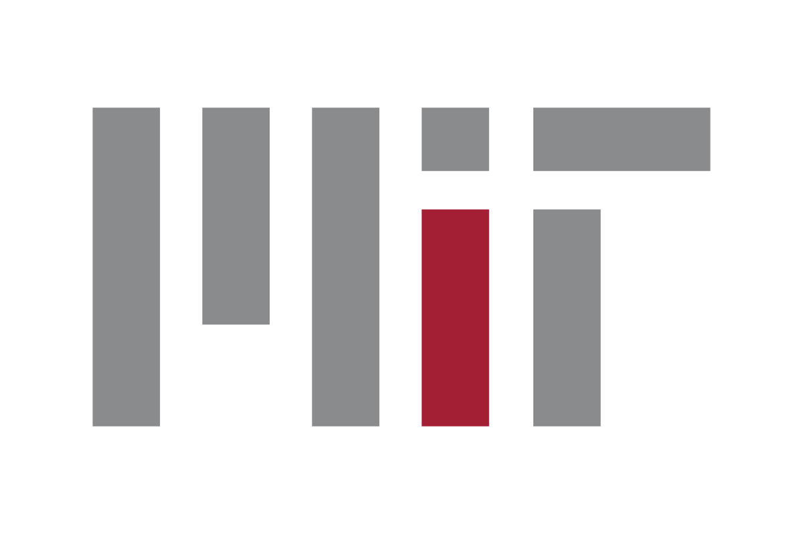
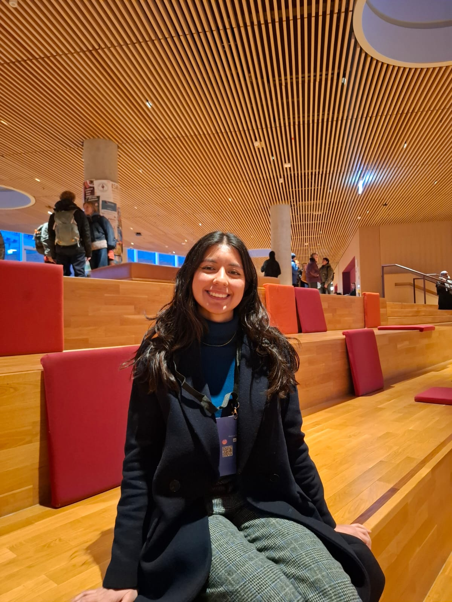

Techno-solutionism
We will question the assumption that more gadgets, models, agents, or dashboards will automatically fix fragmented systems.

CriticalDataReimagining Health Innovation
Copenhagen gathering on AI, healthcare, patient voices, and community-led evaluation.
AI as a Catalyst Copenhagen is a one-day gathering for people willing to push past the easy story that new technology will automatically repair healthcare. The event centers patient voices as co-designers and asks participants to work upstream from symptoms toward root causes.
The format is built around conversation, hands-on workshops, and critical evaluation. Instead of racing toward an MVP, teams will examine assumptions, harms, guardrails, accountability, and the social conditions that shape health.
The goal is not a one-off event. It is to grow a Copenhagen community that keeps working on projects, workshops, and public conversations after August.
The Technical University Hospital of Greater Copenhagen · partnership between RegionH and DTU
We will question the assumption that more gadgets, models, agents, or dashboards will automatically fix fragmented systems.
We will test the belief that technology-based answers are superior to people-based, relationship-based, and community-led solutions.
We will explore relational accountability: the shared guardrails communities build when law, procurement, and institutions cannot keep pace.
The schedule below is a working structure based on the planning call. Session names and timing can be refined as workshop materials are selected.
TUH Skylab at Rigshospitalet · Copenhagen
Copenhagen route to be announced
Participants and mentors are invited to continue the conversation in the city. The intent is a relaxed, low-structure walk, meal, or cultural stop where people can ask harder questions and build relationships beyond the workshop room.
Participants compare model responses across prompts, languages, and cultural contexts, then discuss who should evaluate healthcare AI and what communities need to see before trusting it.
Health AI Systems Thinking for Community uses recent papers as starting points for imagining failure modes, abuse cases, guardrails, and shared accountability.
Teams work backwards from visible pain points to the social, institutional, and economic drivers that make many technical fixes too shallow to last.

MIT Critical Data · Harvard Medical School

University of Geneva, MIT Critical Data · Clinical AI research

MIT Critical Data · Clinical AI research

University of Geneva · clinical data science and GNNs

DTU & KU · biomedical engineering and MedTech

DTU · imaging and medical device development

MGH/HMS · cardiology and medical education

DTU · M.Sc. in biomedical engineering

DTU · AI in healthcare and 3D disease models

DTU · biosignals and Human-Centered AI

CBS · healthcare innovation and administration

CBS · healthcare innovation, administration, and MedTech
Capacity is intentionally limited so participants can work closely with mentors and each other. The event is free to attend; food and refreshments are planned.
Use the application form to share your interest in joining the Copenhagen gathering.
Apply via Google Form